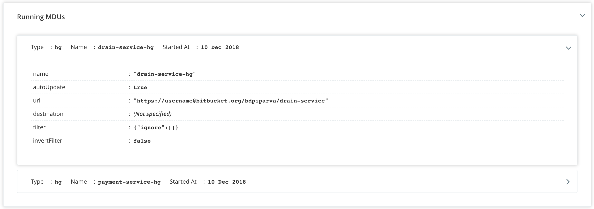
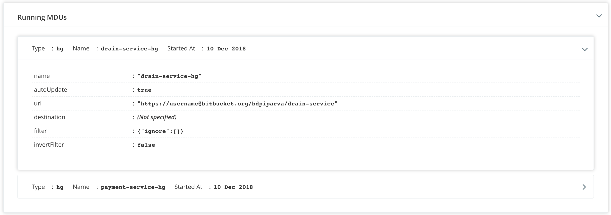

Maintenance Mode
Note: Using this feature requires atleast version 19.1.0 of the GoCD server.
The GoCD system includes a lot of internal subsystems and processes, which continuously do work. Some examples include the material subsystem which takes care of polling for materials, the scheduling subsystem which automatically starts pipelines and stages, the agent subsystem which continuously keeps tracks of agent states and provides them jobs to run, etc.
Maintenance mode is a maintenance mode which can be utilized by the GoCD system administrator to safely restart or upgrade the GoCD server without having any running jobs reschedule when the server is back up.
The maintenance mode implementation:
- Stops the material subsystem so that no new materials are polled.
- Waits for currently polling materials to finish.
Does not allow pipelines-as-code repositories to be polled.
Stops the scheduling subsystem so that no new pipelines are triggered (automatically or through timers).
Prevents users from triggering pipelines.
Prevents users from modifying config.
Prevents users from almost all activity which can modify state in the database or filesystem.
Stops the agent subsystem, so that no agents can pick up work if they’re idle.
Allows all agents currently busy running jobs to finish.
Provides a single location to put GoCD into or bring it out of maintenance mode.
Provides a single location to see the status of all the subsystems, when in maintenance mode.
Provides an API call to put GoCD into or bring it out of maintenance mode.
Shows state of materials which are being polled currently.
Shows state of agents which are currently running jobs.
Shows a banner near the footer of all pages which tells everyone that the server is in maintenance mode.
Indicate when a server is safe to restart or upgrade (finished maintenanceing).
In Progress Maintenance Mode:
After initiating maintenance mode, several sub-systems of GoCD might still be in progress. Example: scheduled jobs, building jobs, material updates, etc. In such cases, GoCD Administrators can choose to cancel building, scheduled jobs or wait for there completion.
Cancelling in-progress material updates might cause repository corruption due to partial clone and have side effects on pipeline scheduling. Hence, GoCD does not allow cancellation of MDUs even during maintenance mode. GoCD administrators should wait until all material updates are completed.

 


Maintenance Mode Completion:
After all the sub-systems of GoCD are stopped during maintenance mode, GoCD server can be considered completely maintenanceed and is ready for a restart or an upgrade.

NOTE: Upon a restart, the GoCD server will no longer be in maintenance mode and will start all subsystems.
The maintenance mode API allows GoCD Administrators to enable, disable and monitor the server maintenance mode state.
 Suggest edits to this page
Suggest edits to this page